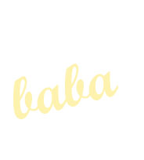
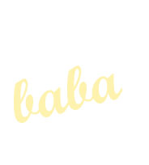

For example, 'tata' in European Romanian is similar to 'tatay' in Asian Tagalog, is similar to 'tatana' in African Tsonga, is similar to 'taita' in the now dormant South American Siona-Tete.
This led researchers to believe that it was due to a baby's speech progression because these sounds are easy to make, when first learning to speak.
Then research that included indigenous languages of disproved this theory *
For example, in the Australian indigenous language of Alyawarr dad is ‘akngeye’, or in the North American language of Cherokee dad is ‘e-dauʼ-ke’
This shows us how unique indigenous language is.
It also shows us that because many languages are more similar than first thought, perhaps many of us are more connected than we know.
Can you find how you call your dad in the chart below?

Notes
* Passmore S, Barth W, Greenhill SJ, Quinn K, Sheard C, Argyriou P, et al. (2023) Kinbank: A global database of kinship terminology. PLoS ONE 18(5): e0283218. https://doi.org/10.1371/journal.pone.0283218
** The calculation for similarity much less accurate than dendrogram. Here only first letters considered ignoring individual letters and word length
The data set for this project was based on Kinbank. More information including r codes and data can be found here
By Nina Errey. This is for my dad. RIP